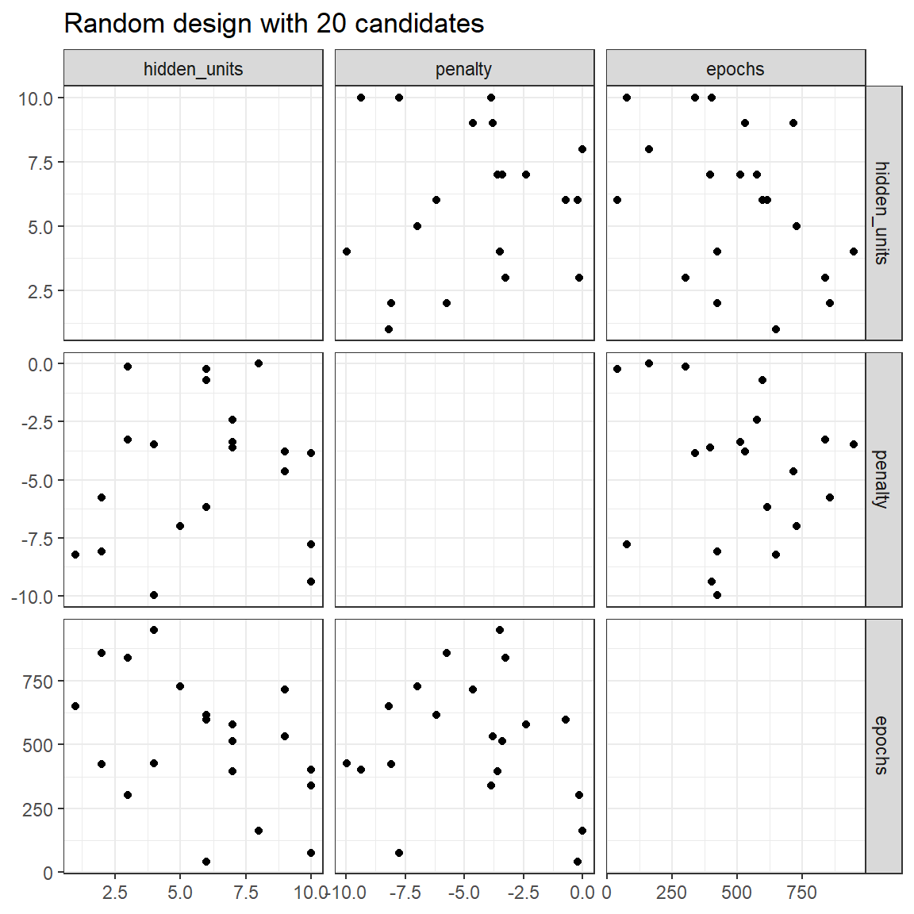
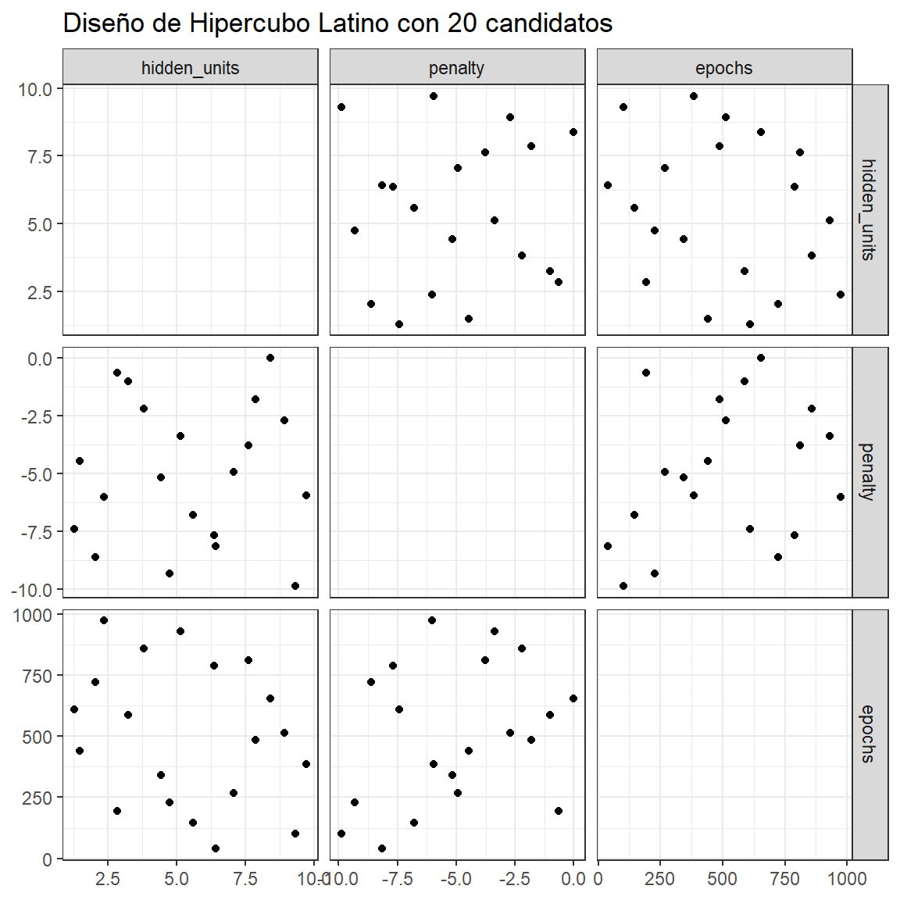
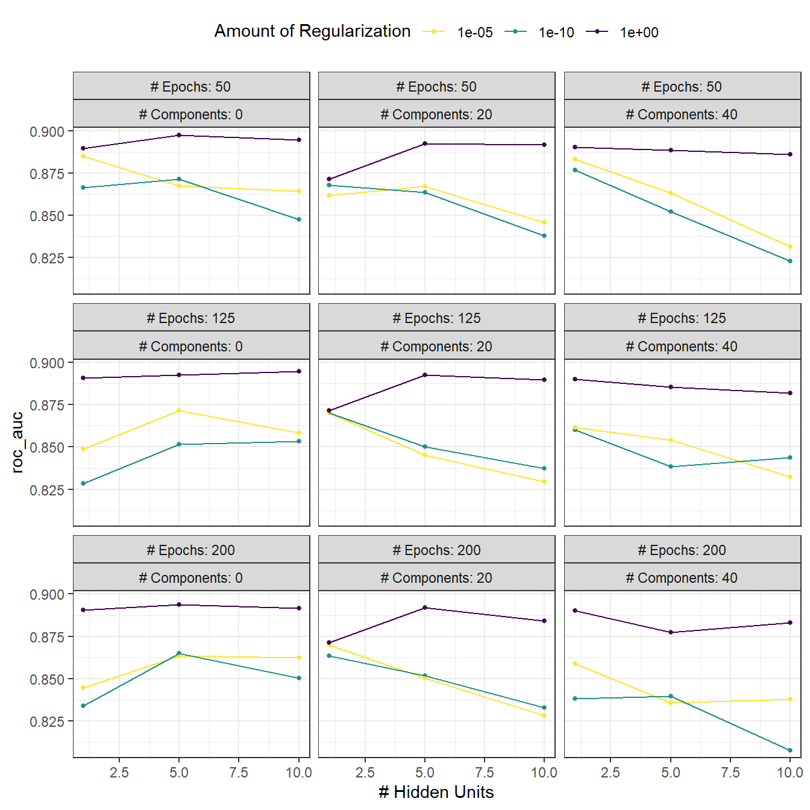
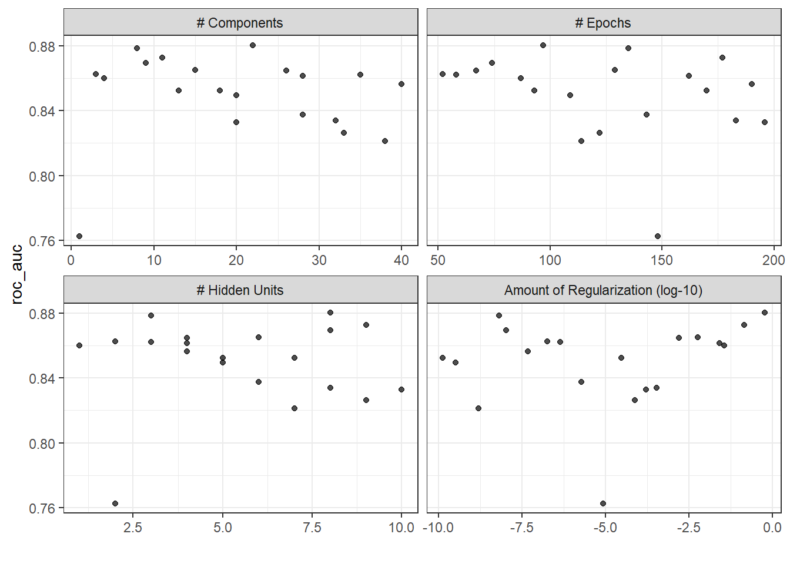
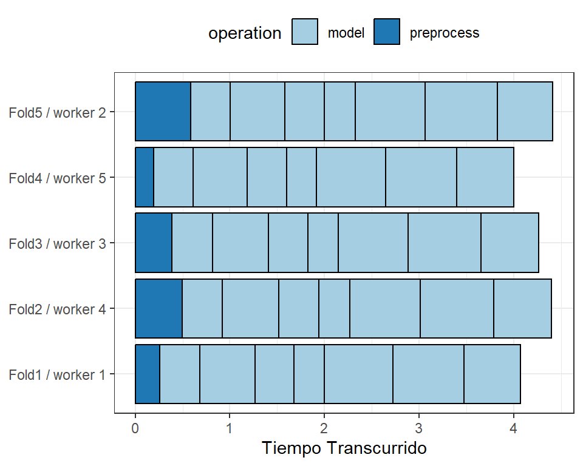
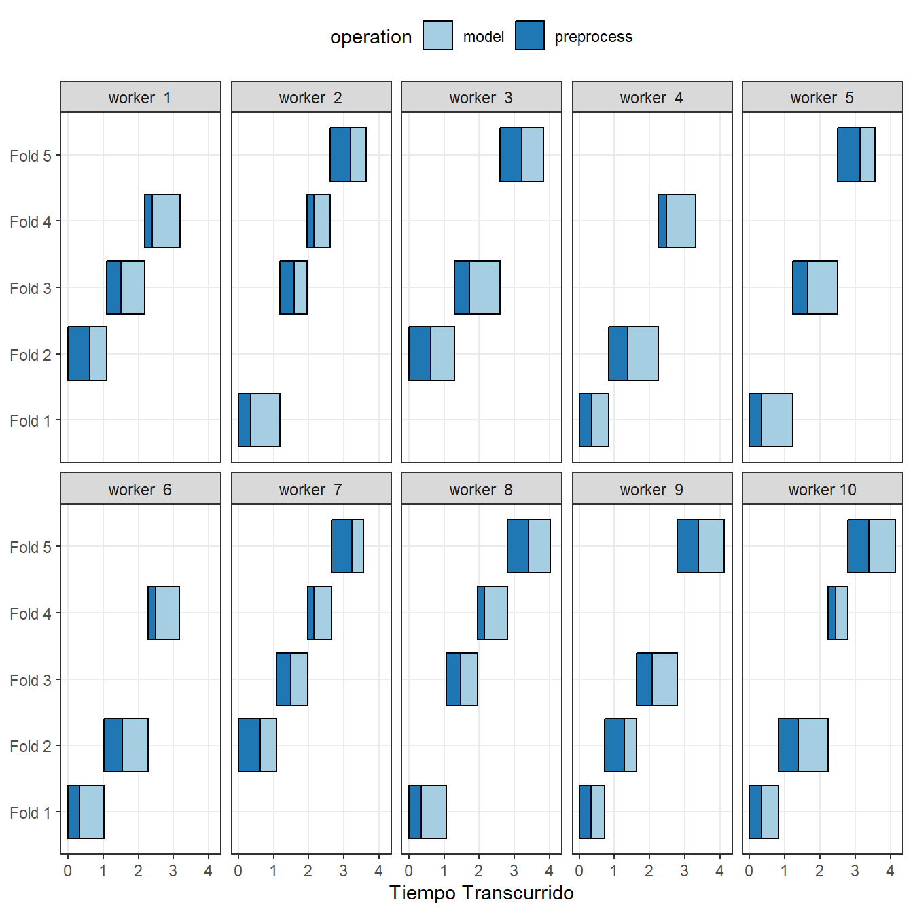
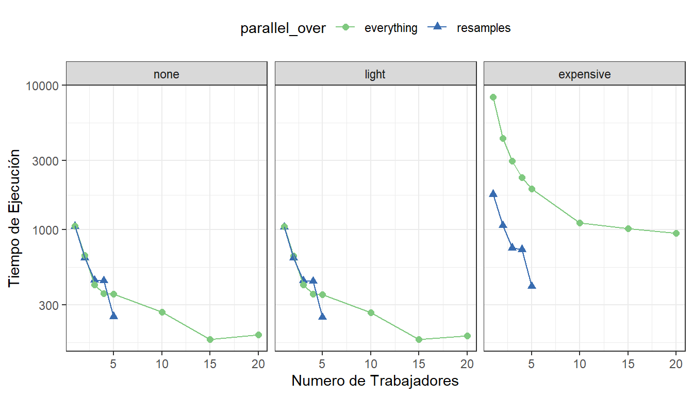
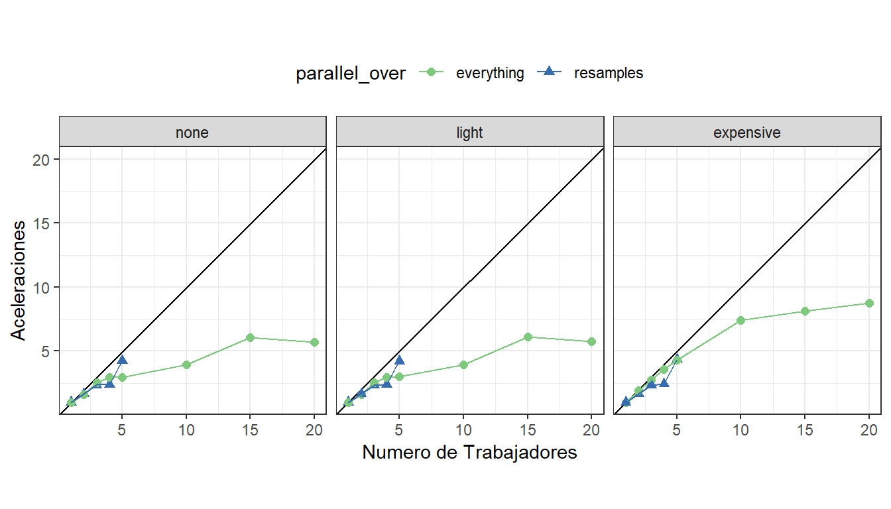
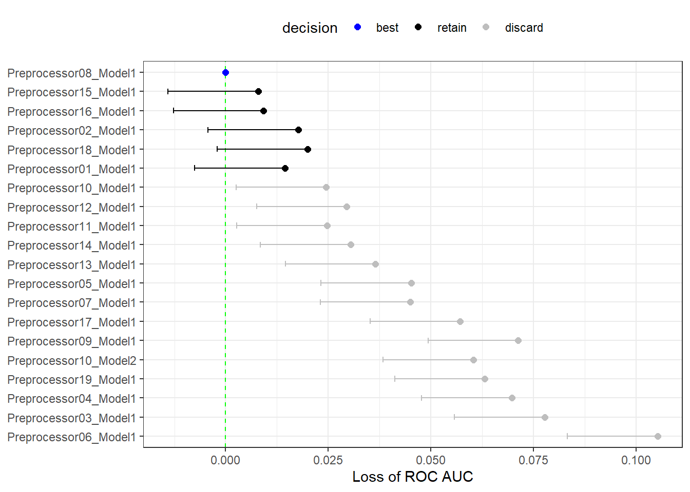

library(tidymodels)
tidymodels_prefer()
mlp_spec <-
mlp(hidden_units = tune(), penalty = tune(), epochs = tune()) %>%
set_engine("nnet", trace = 0) %>%
set_mode("classification")13 Grid Search
In Chapter sec-tuning we demonstrated how users can mark or tag arguments in preprocessing recipes and/or model specifications for optimization using the tune() function. Once we know what to optimize, it’s time to address the question of how to optimize the parameters. This chapter describes grid search methods that specify the possible values of the parameters a priori. Chapter sec-iterative-search will continue the discussion by describing iterative search methods.)
Let’s start by looking at two main approaches for assembling a grid.
13.1 Regular and Nonregular Grids
There are two main types of grids. A regular grid combines each parameter (with its corresponding set of possible values) factorially, i.e., by using all combinations of the sets. Alternatively, a nonregular grid is one where the parameter combinations are not formed from a small set of points.
Before we look at each type in more detail, let’s consider an example model: the multilayer perceptron model (a.k.a. single layer artificial neural network). The parameters marked for tuning are:
the number of hidden units
the number of fitting epochs/iterations in model training
the amount of weight decay penalization
Historically, the number of epochs was determined by early stopping; a separate validation set determined the length of training based on the error rate, since re-predicting the training set led to overfitting. In our case, the use of a weight decay penalty should prohibit overfitting, and there is little harm in tuning the penalty and the number of epochs.
Using parsnip, the specification for a classification model fit using the nnet package is:
The argument trace = 0 prevents extra logging of the training process. As shown in sec-tuning-params-tidymodels, the extract_parameter_set_dials() function can extract the set of arguments with unknown values and sets their dials objects:
mlp_param <- extract_parameter_set_dials(mlp_spec)
mlp_param %>% extract_parameter_dials("hidden_units")
## # Hidden Units (quantitative)
## Range: [1, 10]
mlp_param %>% extract_parameter_dials("penalty")
## Amount of Regularization (quantitative)
## Transformer: log-10 [1e-100, Inf]
## Range (transformed scale): [-10, 0]
mlp_param %>% extract_parameter_dials("epochs")
## # Epochs (quantitative)
## Range: [10, 1000]This output indicates that the parameter objects are complete and prints their default ranges. These values will be used to demonstrate how to create different types of parameter grids.
Regular grids
Regular grids are combinations of separate sets of parameter values. First, the user creates a distinct set of values for each parameter. The number of possible values need not be the same for each parameter. The tidyr function crossing() is one way to create a regular grid:
The parameter object knows the ranges of the parameters. The dials package contains a set of grid_*() functions that take the parameter object as input to produce different types of grids. For example:
grid_regular(mlp_param, levels = 2)
## # A tibble: 8 × 3
## hidden_units penalty epochs
## <int> <dbl> <int>
## 1 1 0.0000000001 10
## 2 10 0.0000000001 10
## 3 1 1 10
## 4 10 1 10
## 5 1 0.0000000001 1000
## 6 10 0.0000000001 1000
## # ℹ 2 more rowsThe levels argument is the number of levels per parameter to create. It can also take a named vector of values:
mlp_param %>%
grid_regular(levels = c(hidden_units = 3, penalty = 2, epochs = 2))
## # A tibble: 12 × 3
## hidden_units penalty epochs
## <int> <dbl> <int>
## 1 1 0.0000000001 10
## 2 5 0.0000000001 10
## 3 10 0.0000000001 10
## 4 1 1 10
## 5 5 1 10
## 6 10 1 10
## # ℹ 6 more rowsThere are techniques for creating regular grids that do not use all possible values of each parameter set. These fractional factorial designs (Box, Hunter, and Hunter 2005) could also be used. To learn more, consult the CRAN Task View for experimental design.1
Regular grids can be computationally expensive to use, especially when there are a medium-to-large number of tuning parameters. This is true for many models but not all. As discussed in sec-efficient-grids below, there are many models whose tuning time decreases with a regular grid!
One advantage to using a regular grid is that the relationships and patterns between the tuning parameters and the model metrics are easily understood. The factorial nature of these designs allows for examination of each parameter separately with little confounding between parameters.
Irregular grids
There are several options for creating non-regular grids. The first is to use random sampling across the range of parameters. The grid_random() function generates independent uniform random numbers across the parameter ranges. If the parameter object has an associated transformation (such as we have for penalty), the random numbers are generated on the transformed scale. Let’s create a random grid for the parameters from our example neural network:
set.seed(1301)
mlp_param %>%
grid_random(size = 1000) %>% # 'size' is the number of combinations
summary()
## hidden_units penalty epochs
## Min. : 1.00 Min. :0.0000 Min. : 10
## 1st Qu.: 3.00 1st Qu.:0.0000 1st Qu.:266
## Median : 5.00 Median :0.0000 Median :497
## Mean : 5.38 Mean :0.0437 Mean :510
## 3rd Qu.: 8.00 3rd Qu.:0.0027 3rd Qu.:761
## Max. :10.00 Max. :0.9814 Max. :999For penalty, the random numbers are uniform on the log (base-10) scale but the values in the grid are in the natural units.
The issue with random grids is that, with small-to-medium grids, random values can result in overlapping parameter combinations. Also, the random grid needs to cover the whole parameter space, but the likelihood of good coverage increases with the number of grid values. Even for a sample of 15 candidate points, Figure fig-random-grid shows some overlap between points for our example multilayer perceptron.
library(ggforce)
set.seed(1302)
mlp_param %>%
# The 'original = FALSE' option keeps penalty in log10 units
grid_random(size = 20, original = FALSE) %>%
ggplot(aes(x = .panel_x, y = .panel_y)) +
geom_point() +
geom_blank() +
facet_matrix(vars(hidden_units, penalty, epochs), layer.diag = 2) +
labs(title = "Random design with 20 candidates")
A much better approach is to use a set of experimental designs called space-filling designs. While different design methods have slightly different goals, they generally find a configuration of points that cover the parameter space with the smallest chance of overlapping or redundant values. Examples of such designs are Latin hypercubes (McKay, Beckman, and Conover 1979), maximum entropy designs (Shewry and Wynn 1987), maximum projection designs (Joseph, Gul, and Ba 2015), and others. See Santner et al. (2003) for an overview.
The dials package contains functions for Latin hypercube and maximum entropy designs. As with grid_random(), the primary inputs are the number of parameter combinations and a parameter object. Let’s compare a random design with a Latin hypercube design for 20 candidate parameter values in Figure fig-space-filling-design.
set.seed(1303)
mlp_param %>%
grid_latin_hypercube(size = 20, original = FALSE) %>%
ggplot(aes(x = .panel_x, y = .panel_y)) +
geom_point() +
geom_blank() +
facet_matrix(vars(hidden_units, penalty, epochs), layer.diag = 2) +
labs(title = "Latin Hypercube design with 20 candidates")
While not perfect, this Latin hypercube design spaces the points farther away from one another and allows a better exploration of the hyperparameter space.
Space-filling designs can be very effective at representing the parameter space. The default design used by the tune package is the maximum entropy design. These tend to produce grids that cover the candidate space well and drastically increase the chances of finding good results.
13.2 Evaluating the Grid
To choose the best tuning parameter combination, each candidate set is assessed using data that were not used to train that model. Resampling methods or a single validation set work well for this purpose. The process (and syntax) closely resembles the approach in sec-resampling-performance that used the fit_resamples() function from the tune package.
After resampling, the user selects the most appropriate candidate parameter set. It might make sense to choose the empirically best parameter combination or bias the choice towards other aspects of the model fit, such as simplicity.
We use a classification data set to demonstrate model tuning in this and the next chapter. The data come from Hill et al. (2007), who developed an automated microscopy laboratory tool for cancer research. The data consists of 56 imaging measurements on 2019 human breast cancer cells. These predictors represent shape and intensity characteristics of different parts of the cells (e.g., the nucleus, the cell boundary, etc.). There is a high degree of correlation between the predictors. For example, there are several different predictors that measure the size and shape of the nucleus and cell boundary. Also, individually, many predictors have skewed distributions.
Each cell belongs to one of two classes. Since this is part of an automated lab test, the focus was on prediction capability rather than inference.
The data are included in the modeldata package. Let’s remove one column not needed for analysis (case):
library(tidymodels)
data(cells)
cells <- cells %>% select(-case)Given the dimensions of the data, we can compute performance metrics using 10-fold cross-validation:
set.seed(1304)
cell_folds <- vfold_cv(cells)Because of the high degree of correlation between predictors, it makes sense to use PCA feature extraction to decorrelate the predictors. The following recipe contains steps to transform the predictors to increase symmetry, normalize them to be on the same scale, then conduct feature extraction. The number of PCA components to retain is also tuned, along with the model parameters.
While the resulting PCA components are technically on the same scale, the lower-rank components tend to have a wider range than the higher-rank components. For this reason, we normalize again to coerce the predictors to have the same mean and variance.
Many of the predictors have skewed distributions. Since PCA is variance based, extreme values can have a detrimental effect on these calculations. To counter this, let’s add a recipe step estimating a Yeo-Johnson transformation for each predictor (Yeo and Johnson 2000). While originally intended as a transformation of the outcome, it can also be used to estimate transformations that encourage more symmetric distributions. This step step_YeoJohnson() occurs in the recipe just prior to the initial normalization via step_normalize(). Then, let’s combine this feature engineering recipe with our neural network model specification mlp_spec.
mlp_rec <-
recipe(class ~ ., data = cells) %>%
step_YeoJohnson(all_numeric_predictors()) %>%
step_normalize(all_numeric_predictors()) %>%
step_pca(all_numeric_predictors(), num_comp = tune()) %>%
step_normalize(all_numeric_predictors())
mlp_wflow <-
workflow() %>%
add_model(mlp_spec) %>%
add_recipe(mlp_rec)Let’s create a parameter object mlp_param to adjust a few of the default ranges. We can change the number of epochs to have a smaller range (50 to 200 epochs). Also, the default range for num_comp() defaults to a very narrow range (one to four components); we can increase the range to 40 components and set the minimum value to zero:
In step_pca(), using zero PCA components is a shortcut to skip the feature extraction. In this way, the original predictors can be directly compared to the results that include PCA components.
The tune_grid() function is the primary function for conducting grid search. Its functionality is very similar to fit_resamples() from sec-resampling-performance, although it has additional arguments related to the grid:
grid: An integer or data frame. When an integer is used, the function creates a space-filling design withgridnumber of candidate parameter combinations. If specific parameter combinations exist, thegridparameter is used to pass them to the function.param_info: An optional argument for defining the parameter ranges. The argument is most useful whengridis an integer.
Otherwise, the interface to tune_grid() is the same as fit_resamples(). The first argument is either a model specification or workflow. When a model is given, the second argument can be either a recipe or formula. The other required argument is an rsample resampling object (such as cell_folds). The following call also passes a metric set so that the area under the ROC curve is measured during resampling.
To start, let’s evaluate a regular grid with three levels across the resamples:
roc_res <- metric_set(roc_auc)
set.seed(1305)
mlp_reg_tune <-
mlp_wflow %>%
tune_grid(
cell_folds,
grid = mlp_param %>% grid_regular(levels = 3),
metrics = roc_res
)
mlp_reg_tune
## # Tuning results
## # 10-fold cross-validation
## # A tibble: 10 × 4
## splits id .metrics .notes
## <list> <chr> <list> <list>
## 1 <split [1817/202]> Fold01 <tibble [81 × 8]> <tibble [0 × 3]>
## 2 <split [1817/202]> Fold02 <tibble [81 × 8]> <tibble [0 × 3]>
## 3 <split [1817/202]> Fold03 <tibble [81 × 8]> <tibble [0 × 3]>
## 4 <split [1817/202]> Fold04 <tibble [81 × 8]> <tibble [0 × 3]>
## 5 <split [1817/202]> Fold05 <tibble [81 × 8]> <tibble [0 × 3]>
## 6 <split [1817/202]> Fold06 <tibble [81 × 8]> <tibble [0 × 3]>
## # ℹ 4 more rowsThere are high-level convenience functions we can use to understand the results. First, the autoplot() method for regular grids shows the performance profiles across tuning parameters in Figure fig-regular-grid-plot.
autoplot(mlp_reg_tune) +
scale_color_viridis_d(direction = -1) +
theme(legend.position = "top")
For these data, the amount of penalization has the largest impact on the area under the ROC curve. The number of epochs doesn’t appear to have a pronounced effect on performance. The change in the number of hidden units appears to matter most when the amount of regularization is low (and harms performance). There are several parameter configurations that have roughly equivalent performance, as seen using the function show_best():
show_best(mlp_reg_tune) %>% select(-.estimator)
## # A tibble: 5 × 9
## hidden_units penalty epochs num_comp .metric mean n std_err .config
## <int> <dbl> <int> <int> <chr> <dbl> <int> <dbl> <chr>
## 1 5 1 50 0 roc_auc 0.897 10 0.00857 Preprocessor1_Mo…
## 2 10 1 125 0 roc_auc 0.895 10 0.00898 Preprocessor1_Mo…
## 3 10 1 50 0 roc_auc 0.894 10 0.00960 Preprocessor1_Mo…
## 4 5 1 200 0 roc_auc 0.894 10 0.00784 Preprocessor1_Mo…
## 5 5 1 125 0 roc_auc 0.892 10 0.00822 Preprocessor1_Mo…Based on these results, it would make sense to conduct another run of grid search with larger values of the weight decay penalty.
To use a space-filling design, either the grid argument can be given an integer or one of the grid_*() functions can produce a data frame. To evaluate the same range using a maximum entropy design with 20 candidate values:
set.seed(1306)
mlp_sfd_tune <-
mlp_wflow %>%
tune_grid(
cell_folds,
grid = 20,
# Pass in the parameter object to use the appropriate range:
param_info = mlp_param,
metrics = roc_res
)
mlp_sfd_tune
## # Tuning results
## # 10-fold cross-validation
## # A tibble: 10 × 4
## splits id .metrics .notes
## <list> <chr> <list> <list>
## 1 <split [1817/202]> Fold01 <tibble [20 × 8]> <tibble [0 × 3]>
## 2 <split [1817/202]> Fold02 <tibble [20 × 8]> <tibble [0 × 3]>
## 3 <split [1817/202]> Fold03 <tibble [20 × 8]> <tibble [0 × 3]>
## 4 <split [1817/202]> Fold04 <tibble [20 × 8]> <tibble [0 × 3]>
## 5 <split [1817/202]> Fold05 <tibble [20 × 8]> <tibble [0 × 3]>
## 6 <split [1817/202]> Fold06 <tibble [20 × 8]> <tibble [0 × 3]>
## # ℹ 4 more rowsThe autoplot() method will also work with these designs, although the format of the results will be different. Figure fig-sfd-plot was produced using autoplot(mlp_sfd_tune).

autoplot() method results when used with a space-filling designThis marginal effects plot (Figure fig-sfd-plot) shows the relationship of each parameter with the performance metric.
Take care when examining this plot; since a regular grid is not used, the values of the other tuning parameters can affect each panel.
The penalty parameter appears to result in better performance with smaller amounts of weight decay. This is the opposite of the results from the regular grid. Since each point in each panel is shared with the other three tuning parameters, the trends in one panel can be affected by the others. Using a regular grid, each point in each panel is equally averaged over the other parameters. For this reason, the effect of each parameter is better isolated with regular grids.
As with the regular grid, show_best() can report on the numerically best results:
show_best(mlp_sfd_tune) %>% select(-.estimator)
## # A tibble: 5 × 9
## hidden_units penalty epochs num_comp .metric mean n std_err .config
## <int> <dbl> <int> <int> <chr> <dbl> <int> <dbl> <chr>
## 1 8 0.594 97 22 roc_auc 0.880 10 0.00998 Preprocess…
## 2 3 0.00000000649 135 8 roc_auc 0.878 10 0.00953 Preprocess…
## 3 9 0.141 177 11 roc_auc 0.873 10 0.0104 Preprocess…
## 4 8 0.0000000103 74 9 roc_auc 0.869 10 0.00761 Preprocess…
## 5 6 0.00581 129 15 roc_auc 0.865 10 0.00658 Preprocess…Generally, it is a good idea to evaluate the models over multiple metrics so that different aspects of the model fit are taken into account. Also, it often makes sense to choose a slightly suboptimal parameter combination that is associated with a simpler model. For this model, simplicity corresponds to larger penalty values and/or fewer hidden units.
As with the results from fit_resamples(), there is usually no value in retaining the intermediary model fits across the resamples and tuning parameters. However, as before, the extract option to control_grid() allows the retention of the fitted models and/or recipes. Also, setting the save_pred option to TRUE retains the assessment set predictions and these can be accessed using collect_predictions().
13.3 Finalizing the Model
If one of the sets of possible model parameters found via show_best() were an attractive final option for these data, we might wish to evaluate how well it does on the test set. However, the results of tune_grid() only provide the substrate to choose appropriate tuning parameters. The function does not fit a final model.
To fit a final model, a final set of parameter values must be determined. There are two methods to do so:
- manually pick values that appear appropriate or
- use a
select_*()function.
For example, select_best() will choose the parameters with the numerically best results. Let’s go back to our regular grid results and see which one is best:
select_best(mlp_reg_tune, metric = "roc_auc")
## # A tibble: 1 × 5
## hidden_units penalty epochs num_comp .config
## <int> <dbl> <int> <int> <chr>
## 1 5 1 50 0 Preprocessor1_Model08Looking back at Figure fig-regular-grid-plot, we can see that a model with a single hidden unit trained for 125 epochs on the original predictors with a large amount of penalization has performance competitive with this option, and is simpler. This is basically penalized logistic regression! To manually specify these parameters, we can create a tibble with these values and then use a finalization function to splice the values back into the workflow:
logistic_param <-
tibble(
num_comp = 0,
epochs = 125,
hidden_units = 1,
penalty = 1
)
final_mlp_wflow <-
mlp_wflow %>%
finalize_workflow(logistic_param)
final_mlp_wflow
## ══ Workflow ═════════════════════════════════════════════════════════════════════════
## Preprocessor: Recipe
## Model: mlp()
##
## ── Preprocessor ─────────────────────────────────────────────────────────────────────
## 4 Recipe Steps
##
## • step_YeoJohnson()
## • step_normalize()
## • step_pca()
## • step_normalize()
##
## ── Model ────────────────────────────────────────────────────────────────────────────
## Single Layer Neural Network Model Specification (classification)
##
## Main Arguments:
## hidden_units = 1
## penalty = 1
## epochs = 125
##
## Engine-Specific Arguments:
## trace = 0
##
## Computational engine: nnetNo more values of tune() are included in this finalized workflow. Now the model can be fit to the entire training set:
final_mlp_fit <-
final_mlp_wflow %>%
fit(cells)This object can now be used to make future predictions on new data.
If you did not use a workflow, finalization of a model and/or recipe is done using finalize_model() and finalize_recipe().
13.4 Tools for Creating Tuning Specifications
The usemodels package can take a data frame and model formula, then write out R code for tuning the model. The code also creates an appropriate recipe whose steps depend on the requested model as well as the predictor data.
For example, for the Ames housing data, xgboost modeling code could be created with:
The resulting code is as follows:
xgboost_recipe <-
recipe(formula = Sale_Price ~ Neighborhood + Gr_Liv_Area + Year_Built + Bldg_Type +
Latitude + Longitude, data = ames_train) %>%
step_novel(all_nominal_predictors()) %>%
## This model requires the predictors to be numeric. The most common
## method to convert qualitative predictors to numeric is to create
## binary indicator variables (aka dummy variables) from these
## predictors. However, for this model, binary indicator variables can be
## made for each of the levels of the factors (known as 'one-hot
## encoding').
step_dummy(all_nominal_predictors(), one_hot = TRUE) %>%
step_zv(all_predictors())
xgboost_spec <-
boost_tree(trees = tune(), min_n = tune(), tree_depth = tune(), learn_rate = tune(),
loss_reduction = tune(), sample_size = tune()) %>%
set_mode("regression") %>%
set_engine("xgboost")
xgboost_workflow <-
workflow() %>%
add_recipe(xgboost_recipe) %>%
add_model(xgboost_spec)
set.seed(69305)
xgboost_tune <-
tune_grid(xgboost_workflow,
resamples = stop("add your rsample object"),
grid = stop("add number of candidate points"))Based on what usemodels understands about the data, this code is the minimal preprocessing required. For other models, operations like step_normalize() are added to fulfill the basic needs of the model. Notice that it is our responsibility, as the modeling practitioner, to choose what resamples to use for tuning, as well as what kind of grid.
The usemodels package can also be used to create model fitting code with no tuning by setting the argument tune = FALSE.
13.5 Tools for Efficient Grid Search
It is possible to make grid search more computationally efficient by applying a few different tricks and optimizations. This section describes several techniques.
13.5.1 Submodel optimization
There are types of models where, from a single model fit, multiple tuning parameters can be evaluated without refitting.
For example, partial least squares (PLS) is a supervised version of principal component analysis (Geladi and Kowalski 1986). It creates components that maximize the variation in the predictors (like PCA) but simultaneously tries to maximize the correlation between these predictors and the outcome. We’ll explore PLS more in Chapter sec-dimensionality. One tuning parameter is the number of PLS components to retain. Suppose that a data set with 100 predictors is fit using PLS. The number of possible components to retain can range from one to fifty. However, in many implementations, a single model fit can compute predicted values across many values of num_comp. As a result, a PLS model created with 100 components can also make predictions for any num_comp <= 100. This saves time since, instead of creating redundant model fits, a single fit can be used to evaluate many submodels.
While not all models can exploit this feature, many broadly used ones do.
Boosting models can typically make predictions across multiple values for the number of boosting iterations.
Regularization methods, such as the glmnet model, can make simultaneous predictions across the amount of regularization used to fit the model.
Multivariate adaptive regression splines (MARS) adds a set of nonlinear features to linear regression models (Friedman 1991). The number of terms to retain is a tuning parameter, and it is computationally fast to make predictions across many values of this parameter from a single model fit.
The tune package automatically applies this type of optimization whenever an applicable model is tuned.
For example, if a boosted C5.0 classification model (M. Kuhn and Johnson 2013) was fit to the cell data, we can tune the number of boosting iterations (trees). With all other parameters set at their default values, we can evaluate iterations from 1 to 100 on the same resamples as used previously:
c5_spec <-
boost_tree(trees = tune()) %>%
set_engine("C5.0") %>%
set_mode("classification")
set.seed(1307)
c5_spec %>%
tune_grid(
class ~ .,
resamples = cell_folds,
grid = data.frame(trees = 1:100),
metrics = roc_res
)Without the submodel optimization, the call to tune_grid() used 62.2 minutes to resample 100 submodels. With the optimization, the same call took 100 seconds (a 37-fold speed-up). The reduced time is the difference in tune_grid() fitting 1000 models versus 10 models.
Even though we fit the model with and without the submodel prediction trick, this optimization is automatically applied by parsnip.
13.5.2 Parallel processing
As previously mentioned in sec-parallel, parallel processing is an effective method for decreasing execution time when resampling models. This advantage conveys to model tuning via grid search, although there are additional considerations.
Let’s consider two different parallel processing schemes.
When tuning models via grid search, there are two distinct loops: one over resamples and another over the unique tuning parameter combinations. In pseudocode, this process would look like:
for (rs in resamples) {
# Create analysis and assessment sets
# Preprocess data (e.g. formula or recipe)
for (mod in configurations) {
# Fit model {mod} to the {rs} analysis set
# Predict the {rs} assessment set
}
}By default, the tune package parallelizes only over resamples (the outer loop), as opposed to both the outer and inner loops.
This is the optimal scenario when the preprocessing method is expensive. However, there are two potential downsides to this approach:
It limits the achievable speed-ups when the preprocessing is not expensive.
The number of parallel workers is limited by the number of resamples. For example, with 10-fold cross-validation you can use only 10 parallel workers even when the computer has more than 10 cores.
To illustrate how the parallel processing works, we’ll use a case where there are 7 model tuning parameter values, with 5-fold cross-validation. Figure fig-one-resample-per-worker shows how the tasks are allocated to the worker processes.

Note that each fold is assigned to its own worker process and, since only model parameters are being tuned, the preprocessing is conducted once per fold/worker. If fewer than five worker processes were used, some workers would receive multiple folds.
In the control functions for the tune_*() functions, the argument parallel_over controls how the process is executed. To use the previous parallelization strategy, the argument is parallel_over = "resamples".
Instead of parallel processing the resamples, an alternate scheme combines the loops over resamples and models into a single loop. In pseudocode, this process would look like:
all_tasks <- crossing(resamples, configurations)
for (iter in all_tasks) {
# Create analysis and assessment sets for {iter}
# Preprocess data (e.g. formula or recipe)
# Fit model {iter} to the {iter} analysis set
# Predict the {iter} assessment set
}In this case, parallelization now occurs over the single loop. For example, if we use 5-fold cross-validation with \(M\) tuning parameter values, the loop is executed over \(5\times M\) iterations. This increases the number of potential workers that can be used. However, the work related to data preprocessing is repeated multiple times. If those steps are expensive, this approach will be inefficient.
In tidymodels, validation sets are treated as a single resample. In these cases, this parallelization scheme would be best.
Figure fig-distributed-tasks illustrates the delegation of tasks to the workers in this scheme; the same example is used but with 10 workers.

Here, each worker process handles multiple folds, and the preprocessing is needlessly repeated. For example, for the first fold, the preprocessing was computed seven times instead of once.
For this scheme, the control function argument is parallel_over = "everything".
13.5.3 Benchmarking boosted trees
To compare different possible parallelization schemes, we tuned a boosted tree with the xgboost engine using a data set of 4,000 samples, with 5-fold cross-validation and 10 candidate models. These data required some baseline preprocessing that did not require any estimation. The preprocessing was handled three different ways:
- Preprocess the data prior to modeling using a dplyr pipeline (labeled as “none” in the later plots).
- Conduct the same preprocessing via a recipe (shown as “light” preprocessing).
- With a recipe, add an additional step that has a high computational cost (labeled as “expensive”).
The first and second preprocessing options are designed for comparison, to measure the computational cost of the recipe in the second option. The third option measures the cost of performing redundant computations with parallel_over = "everything".
We evaluated this process using variable numbers of worker processes and using the two parallel_over options, on a computer with 10 physical cores and 20 virtual cores (via hyper-threading).
First, let’s consider the raw execution times in Figure fig-parallel-times.

Since there were only five resamples, the number of cores used when parallel_over = "resamples" is limited to five.
Comparing the curves in the first two panels for “none” and “light”:
There is little difference in the execution times between the panels. This indicates, for these data, there is no real computational penalty for doing the preprocessing steps in a recipe.
There is some benefit for using
parallel_over = "everything"with many cores. However, as shown in the figure, the majority of the benefit of parallel processing occurs in the first five workers.
With the expensive preprocessing step, there is a considerable difference in execution times. Using parallel_over = "everything" is problematic since, even using all cores, it never achieves the execution time that parallel_over = "resamples" attains with just five cores. This is because the costly preprocessing step is unnecessarily repeated in the computational scheme.
We can also view these data in terms of speed-ups in Figure fig-parallel-speedups.

The best speed-ups, for these data, occur when parallel_over = "resamples" and when the computations are expensive. However, in the latter case, remember that the previous analysis indicates that the overall model fits are slower.
What is the benefit of using the submodel optimization method in conjunction with parallel processing? The C5.0 classification model shown in sec-submodel-trick was also run in parallel with ten workers. The parallel computations took 13.3 seconds for a 7.5-fold speed-up (both runs used the submodel optimization trick). Between the submodel optimization trick and parallel processing, there was a total 282-fold speed-up over the most basic grid search code.
Overall, note that the increased computational savings will vary from model to model and are also affected by the size of the grid, the number of resamples, etc. A very computationally efficient model may not benefit as much from parallel processing.
13.5.4 Access to global variables
When using tidymodels, it is possible to use values in your local environment (usually the global environment) in model objects.
What do we mean by “environment” here? Think of an environment in R as a place to store variables that you can work with. See the “Environments” chapter of Wickham (2019) to learn more.
If we define a variable to use as a model parameter and then pass it to a function like linear_reg(), the variable is typically defined in the global environment.
coef_penalty <- 0.1
spec <- linear_reg(penalty = coef_penalty) %>% set_engine("glmnet")
spec
## Linear Regression Model Specification (regression)
##
## Main Arguments:
## penalty = coef_penalty
##
## Computational engine: glmnetModels created with the parsnip package save arguments like these as quosures; these are objects that track both the name of the object as well as the environment where it lives:
spec$args$penalty
## <quosure>
## expr: ^coef_penalty
## env: globalNotice that we have env: global because this variable was created in the global environment. The model specification defined by spec works correctly when run in a user’s regular session because that session is also using the global environment; R can easily find the object coef_penalty.
When such a model is evaluated with parallel workers, it may fail. Depending on the particular technology that is used for parallel processing, the workers may not have access to the global environment.
When writing code that will be run in parallel, it is a good idea to insert the actual data into the objects rather than the reference to the object. The rlang and dplyr packages can be very helpful for this. For example, the !! operator can splice a single value into an object:
spec <- linear_reg(penalty = !!coef_penalty) %>% set_engine("glmnet")
spec$args$penalty
## <quosure>
## expr: ^0.1
## env: emptyNow the output is ^0.1, indicating that the value is there instead of the reference to the object. When you have multiple external values to insert into an object, the !!! operator can help:
mcmc_args <- list(chains = 3, iter = 1000, cores = 3)
linear_reg() %>% set_engine("stan", !!!mcmc_args)
## Linear Regression Model Specification (regression)
##
## Engine-Specific Arguments:
## chains = 3
## iter = 1000
## cores = 3
##
## Computational engine: stanRecipe selectors are another place where you might want access to global variables. Suppose you have a recipe step that should use all of the predictors in the cell data that were measured using the second optical channel. We can create a vector of these column names:
library(stringr)
ch_2_vars <- str_subset(names(cells), "ch_2")
ch_2_vars
## [1] "avg_inten_ch_2" "total_inten_ch_2"We could hard-code these into a recipe step but it would be better to reference them programmatically in case the data change. Two ways to do this are:
# Still uses a reference to global data (~_~;)
recipe(class ~ ., data = cells) %>%
step_spatialsign(all_of(ch_2_vars))
##
## ── Recipe ───────────────────────────────────────────────────────────────────────────
##
## ── Inputs
## Number of variables by role
## outcome: 1
## predictor: 56
##
## ── Operations
## • Spatial sign on: all_of(ch_2_vars)
# Inserts the values into the step ヽ(•‿•)ノ
recipe(class ~ ., data = cells) %>%
step_spatialsign(!!!ch_2_vars)
##
## ── Recipe ───────────────────────────────────────────────────────────────────────────
##
## ── Inputs
## Number of variables by role
## outcome: 1
## predictor: 56
##
## ── Operations
## • Spatial sign on: "avg_inten_ch_2", "total_inten_ch_2"The latter is better for parallel processing because all of the needed information is embedded in the recipe object.
13.5.5 Racing methods
One issue with grid search is that all models need to be fit across all resamples before any tuning parameters can be evaluated. It would be helpful if instead, at some point during tuning, an interim analysis could be conducted to eliminate any truly awful parameter candidates. This would be akin to futility analysis in clinical trials. If a new drug is performing excessively poorly (or well), it is potentially unethical to wait until the trial finishes to make a decision.
In machine learning, the set of techniques called racing methods provide a similar function (Maron and Moore 1994). Here, the tuning process evaluates all models on an initial subset of resamples. Based on their current performance metrics, some parameter sets are not considered in subsequent resamples.
As an example, in the multilayer perceptron tuning process with a regular grid explored in this chapter, what would the results look like after only the first three folds? Using techniques similar to those shown in Chapter sec-compare, we can fit a model where the outcome is the resampled area under the ROC curve and the predictor is an indicator for the parameter combination. The model takes the resample-to-resample effect into account and produces point and interval estimates for each parameter setting. The results of the model are one-sided 95% confidence intervals that measure the loss of the ROC value relative to the currently best performing parameters, as shown in Figure fig-racing-process.

Any parameter set whose confidence interval includes zero would lack evidence that its performance is statistically different from the best results. We retain 6 settings; these are resampled more. The remaining 14 submodels are no longer considered.
The process continues for each resample; after the next set of performance metrics, a new model is fit to these statistics, and more submodels are potentially discarded.2
Racing methods can be more efficient than basic grid search as long as the interim analysis is fast and some parameter settings have poor performance. It also is most helpful when the model does not have the ability to exploit submodel predictions.
The finetune package contains functions for racing. The tune_race_anova() function conducts an ANOVA model to test for statistical significance of the different model configurations. The syntax to reproduce the filtering shown previously is:
library(finetune)
set.seed(1308)
mlp_sfd_race <-
mlp_wflow %>%
tune_race_anova(
cell_folds,
grid = 20,
param_info = mlp_param,
metrics = roc_res,
control = control_race(verbose_elim = TRUE)
)The arguments mirror those of tune_grid(). The function control_race() has options for the elimination procedure.
As shown in the animation above, there were one tuning parameter combinations under consideration once the full set of resamples were evaluated. show_best() returns the best models (ranked by performance) but returns only the configurations that were never eliminated:
show_best(mlp_sfd_race, n = 10)
## # A tibble: 1 × 10
## hidden_units penalty epochs num_comp .metric .estimator mean n std_err
## <int> <dbl> <int> <int> <chr> <chr> <dbl> <int> <dbl>
## 1 8 0.814 177 15 roc_auc binary 0.890 10 0.00966
## # ℹ 1 more variable: .config <chr>There are other interim analysis techniques for discarding settings. For example, Krueger, Panknin, and Braun (2015) use traditional sequential analysis methods whereas Max Kuhn (2014) treats the data as a sports competition and uses the Bradley-Terry model (Bradley and Terry 1952) to measure the winning ability of parameter settings.
13.6 Chapter Summary
This chapter discussed the two main classes of grid search (regular and non-regular) that can be used for model tuning and demonstrated how to construct these grids, either manually or using the family of grid_*() functions. The tune_grid() function can evaluate these candidate sets of model parameters using resampling. The chapter also showed how to finalize a model, recipe, or workflow to update the parameter values for the final fit. Grid search can be computationally expensive, but thoughtful choices in the experimental design of such searches can make them tractable.
The data analysis code that will be reused in the next chapter is:
library(tidymodels)
data(cells)
cells <- cells %>% select(-case)
set.seed(1304)
cell_folds <- vfold_cv(cells)
roc_res <- metric_set(roc_auc)
Box, GEP, W Hunter, and J Hunter. 2005. Statistics for Experimenters: An Introduction to Design, Data Analysis, and Model Building. Wiley.
Bradley, R, and M Terry. 1952. “Rank Analysis of Incomplete Block Designs: I. The Method of Paired Comparisons.” Biometrika 39 (3/4): 324–45.
Friedman, J. 1991. “Multivariate Adaptive Regression Splines.” The Annals of Statistics 19 (1): 1–141.
Geladi, P., and B Kowalski. 1986. “Partial Least-Squares Regression: A Tutorial.” Analytica Chimica Acta 185: 1–17.
Hill, A, P LaPan, Y Li, and S Haney. 2007. “Impact of Image Segmentation on High-Content Screening Data Quality for SK-BR-3 Cells.” BMC Bioinformatics 8 (1): 340.
Joseph, V, E Gul, and S Ba. 2015. “Maximum Projection Designs for Computer Experiments.” Biometrika 102 (2): 371–80.
Krueger, T, D Panknin, and M Braun. 2015. “Fast Cross-Validation via Sequential Testing.” Journal of Machine Learning Research 16 (33): 1103–55.
Kuhn, Max. 2014. “Futility Analysis in the Cross-Validation of Machine Learning Models.” https://arxiv.org/abs/1405.6974.
Kuhn, M, and K Johnson. 2013. Applied Predictive Modeling. Springer.
Maron, O, and A Moore. 1994. “Hoeffding Races: Accelerating Model Selection Search for Classification and Function Approximation.” In Advances in Neural Information Processing Systems, 59–66.
McKay, M, R Beckman, and W Conover. 1979. “A Comparison of Three Methods for Selecting Values of Input Variables in the Analysis of Output from a Computer Code.” Technometrics 21 (2): 239–45.
Santner, T, B Williams, W Notz, and B Williams. 2003. The Design and Analysis of Computer Experiments. Springer.
Shewry, M, and H Wynn. 1987. “Maximum Entropy Sampling.” Journal of Applied Statistics 14 (2): 165–70.
Wickham, H. 2019. Advanced r. 2nd ed. Chapman & Hall/CRC the r Series. Taylor & Francis. https://doi.org/10.1201/9781351201315.
Yeo, I-K, and R Johnson. 2000. “A New Family of Power Transformations to Improve Normality or Symmetry.” Biometrika 87 (4): 954–59.